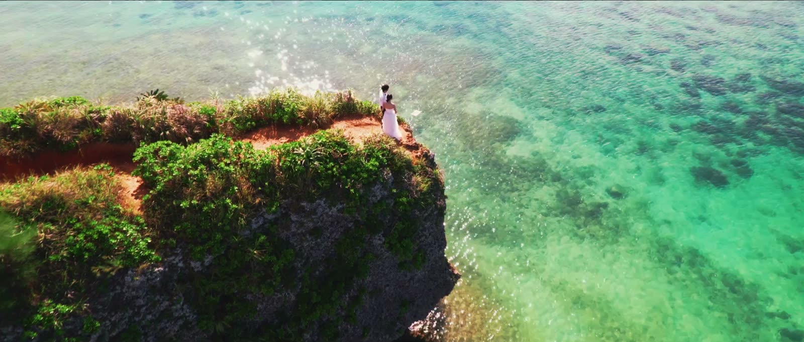
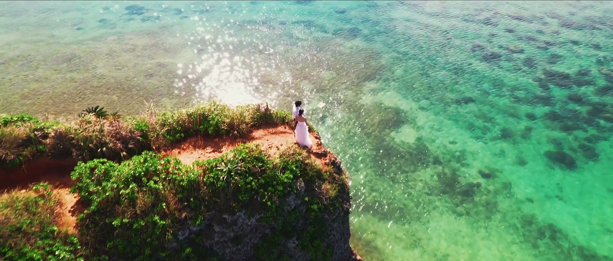
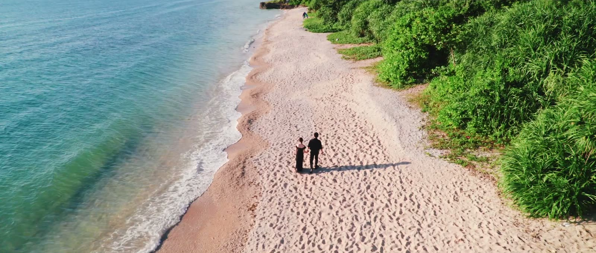
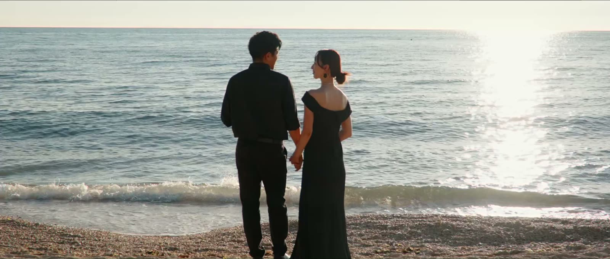
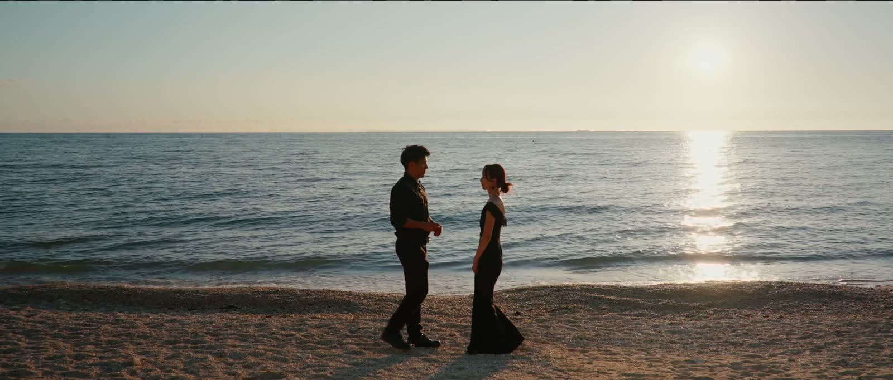
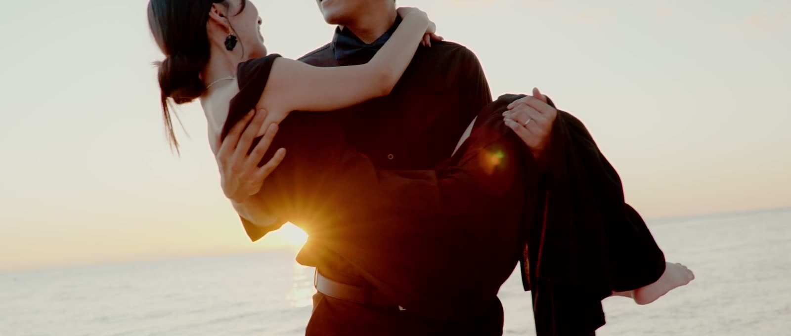

01
明るい海から始める
光が強い時間は、色の出る場所へ。海の青と、崖の緑を撮ります。

沖縄の前撮りは、場所選びで決まると思われている。 決めているのは潮と光の時間。 同じ場所でも、一時間ずれれば別の写真になる。
海・緑・夕景の候補を整理
写真撮影と動画素材撮影を同時進行
映像制作まで一貫対応
撮影当日のアテンドも対応



海だけで終わらせず、時間帯や移動の流れまで一緒に決める。だから写真と映像に、同じ一日のつながりが残ります。
沖縄の日没は、夏と冬で1時間半以上ちがいます。決まった時間割はありません。撮影日の日の入りに合わせて、うしろから組み立てます。

光が強い時間は、色の出る場所へ。海の青と、崖の緑を撮ります。
影が長くなる頃。表情とディテールは、この時間がいちばんきれいです。

一日でいちばん短い時間。ここに間に合わせるために、朝から逆算します。
4時間あるから、この3つを一日で回れます。
出張撮影 60分前後
島ログ 4時間
出張撮影 写真
島ログ 写真と映像
60分では、ひとつの場所で終わります。4時間あるから、光に合わせて回れます。
必要な内容に合わせて、撮影と編集を選べます。
50,000円
4時間の撮影。写真は50枚以上を編集してお渡しします。映像は2分ほどの作品に仕上げます。
写真だけ、映像だけでも承ります
動画撮影（素材納品） 20,000円
写真撮影（編集込み） 15,000円
映像制作（編集込み） 35,000円
撮影延長（4時間ごと） +15,000円
撮影スポット申請費用 1箇所分込み／2箇所目以降は実費
撮影内容、お支払い、日程変更について事前にご確認ください。
まずは撮りたい雰囲気や日程だけでも構いません。ロケーションの候補からご一緒に考えます。
撮影・編集：上江洌孝太 ／ 島ログ